Objective
แบ่งกลุ่มผู้เรียน MOOC จากพฤติกรรมการเรียนจริง เพื่อสนับสนุนการวางแผนช่วยเหลือผู้เรียนอย่างรับผิดชอบ
Segment MOOC learners using observed learning behaviours to support responsible learner-support planning.
กระบวนการจัดกลุ่มที่ตรวจสอบย้อนกลับได้ ตั้งแต่โจทย์ ข้อมูล EDA การเลือกฟีเจอร์ เปรียบเทียบโมเดล จนถึง deployment และ monitoring
โจทย์ สิ่งที่ห้ามใช้ และข้อจำกัดถูกกำหนดก่อนเห็นผล
แบ่งกลุ่มผู้เรียน MOOC จากพฤติกรรมการเรียนจริง เพื่อสนับสนุนการวางแผนช่วยเหลือผู้เรียนอย่างรับผิดชอบ
Segment MOOC learners using observed learning behaviours to support responsible learner-support planning.
userid_DIตรวจแหล่งที่มา schema hash และการแยก outcome
รักษา raw ลบเฉพาะ exact duplicates และบันทึกการแก้ข้อมูล
Before 416,921
After duplicate removal 416,921
Learners 335,650
Video sentinel → missing: 255,528
Date inversions swapped: 1,231
Age flags: 279
Negative activity becomes missing, not zero. Age is audited but excluded. Raw is never overwritten.
EDA ใช้ตัวแปรเชิงตัวเลขที่ไม่ใช่ outcome ทั้งหมด; 4 ฟีเจอร์แยกไว้ตรวจพื้นที่โมเดล
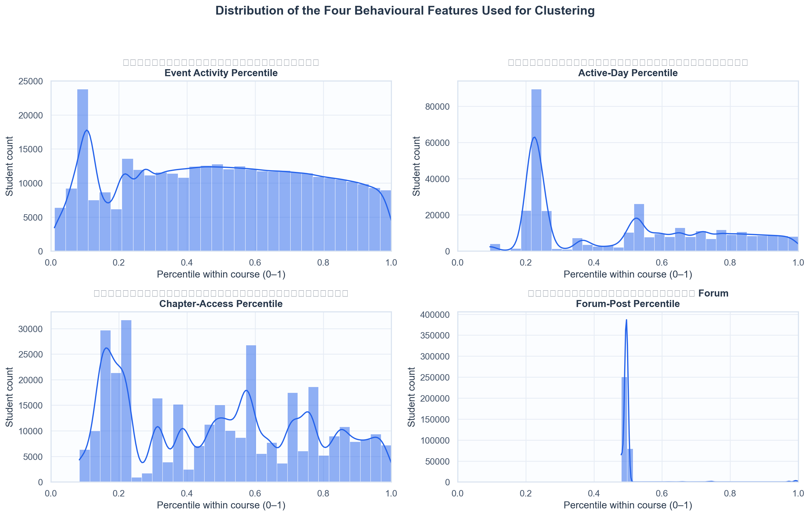
ตรวจการกระจุกและหางยาว
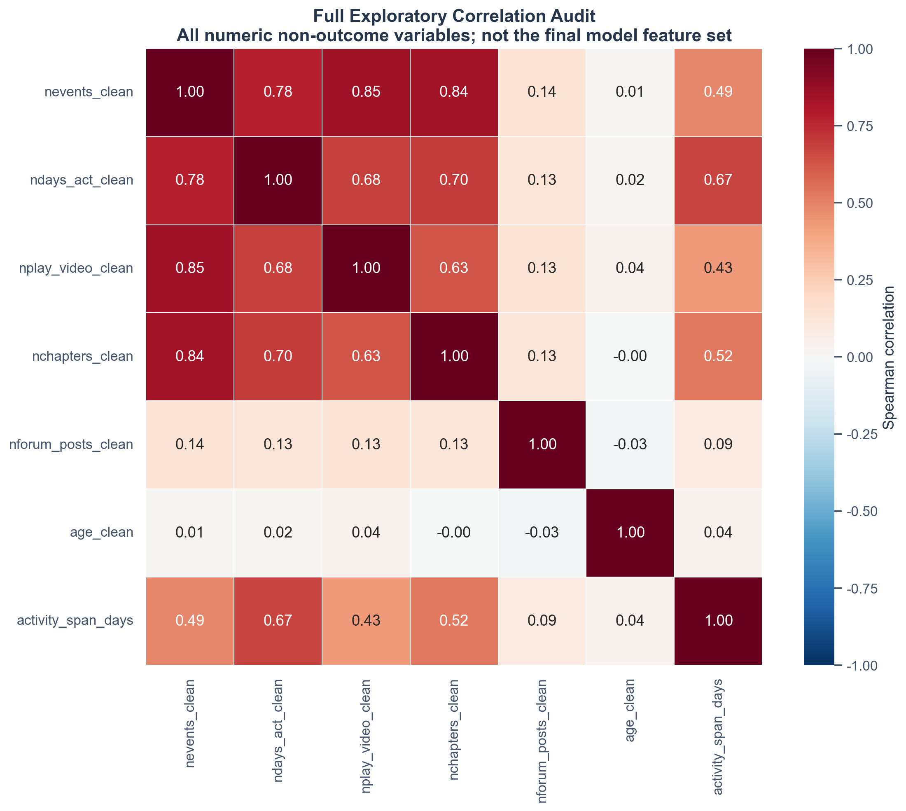
รวม numeric fields ที่ไม่ใช่ outcome
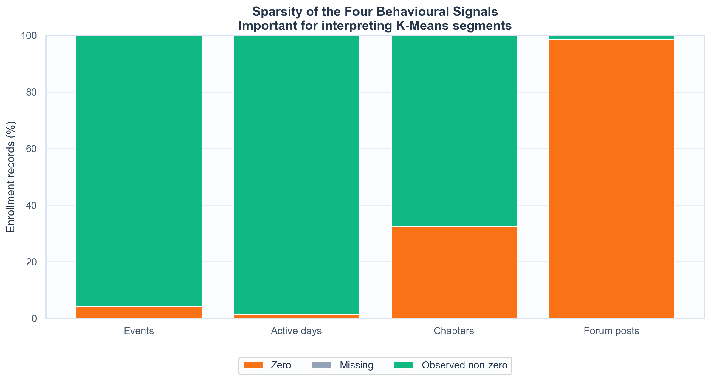
แยกศูนย์จริงจาก missing
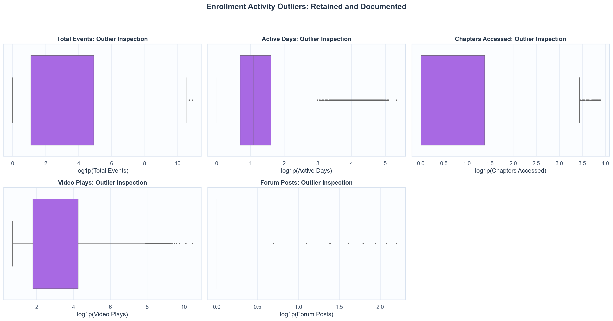
ตรวจค่าผิดปกติก่อนแปลง percentile
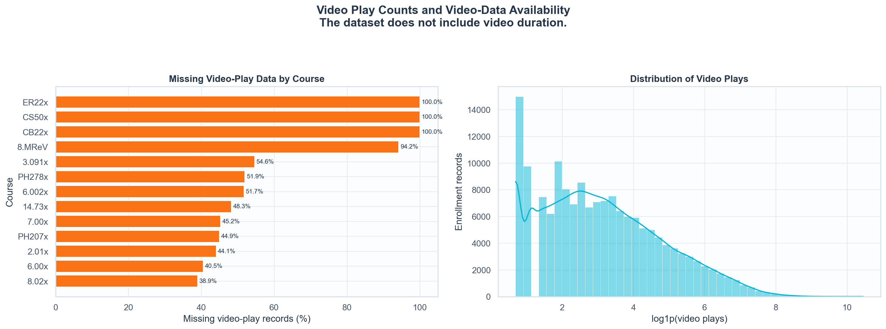
sentinel, missing และความต่างรายวิชา
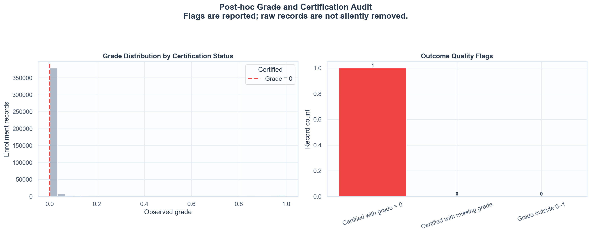
post-hoc เท่านั้น ไม่ใช้สร้างกลุ่ม
| column | display_name | record_count | missing_count | zero_count | q1 | median | q3 | p95 | p99 | max | iqr_outlier_count | iqr_outlier_pct | action |
|---|---|---|---|---|---|---|---|---|---|---|---|---|---|
| nevents_clean | Total Events | 416921 | 0 | 17358 | 2.0000 | 20.0000 | 135.0000 | 1,884.0000 | 7,135.8000 | 53,180.0000 | 64763 | 15.5336 | Retain as observed value; use log-scale for visualisation and robust preprocessing where required. |
| ndays_act_clean | Active Days | 416921 | 0 | 5324 | 1.0000 | 2.0000 | 4.0000 | 23.0000 | 60.0000 | 205.0000 | 54649 | 13.1078 | Retain as observed value; use log-scale for visualisation and robust preprocessing where required. |
| nchapters_clean | Chapters Accessed | 416921 | 0 | 135700 | 0.0000 | 1.0000 | 3.0000 | 12.0000 | 20.0000 | 48.0000 | 37019 | 8.8791 | Retain as observed value; use log-scale for visualisation and robust preprocessing where required. |
| nplay_video_clean | Video Plays | 416921 | 255528 | 0 | 5.0000 | 17.0000 | 69.0000 | 510.0000 | 1,453.0800 | 34,596.0000 | 22546 | 5.4077 | Retain as observed value; use log-scale for visualisation and robust preprocessing where required. |
| nforum_posts_clean | Forum Posts | 416921 | 0 | 411623 | 0.0000 | 0.0000 | 0.0000 | 0.0000 | 1.0000 | 8.0000 | 0 | 0.0000 | Retain as observed value; use log-scale for visualisation and robust preprocessing where required. |
| course_id | enrollment_records | missing_video_records | median_video_plays | mean_video_plays | p95_video_plays | max_video_plays | missing_video_pct |
|---|---|---|---|---|---|---|---|
| CB22x | 28123 | 28123 | n.a. | n.a. | n.a. | n.a. | 100.0000 |
| CS50x | 46332 | 46332 | n.a. | n.a. | n.a. | n.a. | 100.0000 |
| ER22x | 40521 | 40521 | n.a. | n.a. | n.a. | n.a. | 100.0000 |
| 8.MReV | 7151 | 6734 | 4.0000 | 12.7410 | 57.4000 | 181.0000 | 94.1686 |
| 3.091x | 15906 | 8685 | 14.0000 | 104.6330 | 506.0000 | 7,660.0000 | 54.6020 |
| PH278x | 25269 | 13125 | 11.0000 | 39.7127 | 162.0000 | 11,491.0000 | 51.9411 |
| 6.002x | 47219 | 24400 | 15.0000 | 112.5689 | 557.0000 | 24,564.0000 | 51.6741 |
| 14.73x | 23402 | 11293 | 18.0000 | 109.1273 | 551.6000 | 5,865.0000 | 48.2566 |
| 7.00x | 16740 | 7573 | 21.0000 | 121.8660 | 599.0000 | 6,547.0000 | 45.2389 |
| PH207x | 36557 | 16426 | 26.0000 | 213.0904 | 1,088.0000 | 34,596.0000 | 44.9326 |
| 2.01x | 4394 | 1936 | 25.0000 | 91.5895 | 428.1500 | 2,673.0000 | 44.0601 |
| 6.00x | 104143 | 42140 | 19.0000 | 87.9582 | 408.0000 | 8,632.0000 | 40.4636 |
| 8.02x | 21164 | 8240 | 14.0000 | 98.4845 | 465.7000 | 6,794.0000 | 38.9340 |
แปลงเป็น percentile ภายในวิชา รวมหนึ่งแถวต่อผู้เรียน และใช้ 4 input เท่านั้น
mean_course_events_percentilemean_course_active_days_percentilemean_course_chapters_percentilemean_course_forum_posts_percentileMedian imputation → preserve percentile scale [0,1]. ไม่ใช้ RobustScaler ซ้ำ เพราะจะขยาย sparse forum feature จาก IQR ที่เล็กและบิดเบือนระยะทาง
Missing after transform: false
Outcome leakage blocked: true
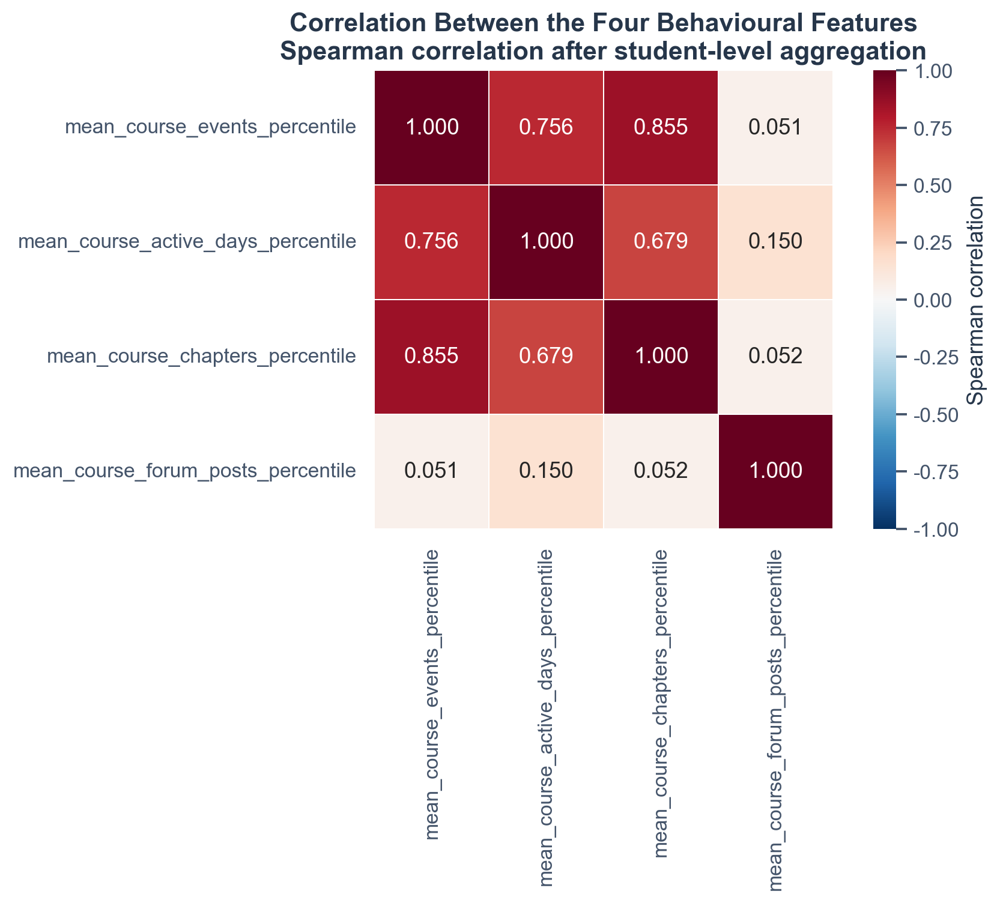
ตรวจหลังเลือกฟีเจอร์
ทดลอง model × K/parameter ก่อนเลือก final: K-Means, HAC, GMM, DBSCAN, BIRCH และ MiniBatch
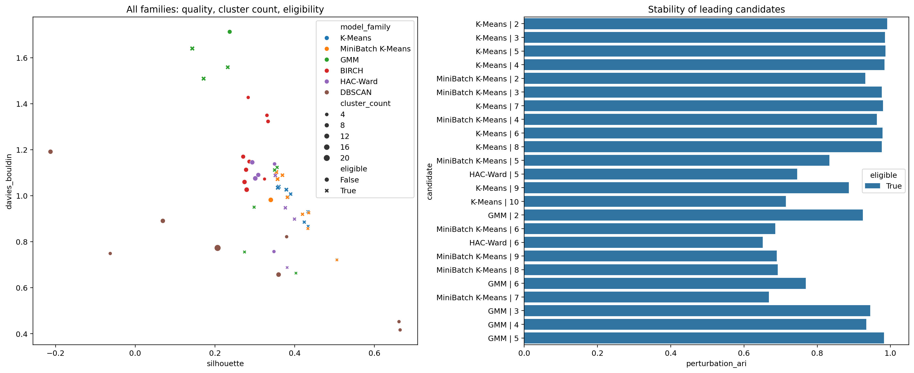
เปรียบเทียบ family หลาย K/parameter พร้อม cluster size, noise และ stability; metric rank เป็น diagnostic ไม่ใช่ universal winner
| model_family | parameter | status | runtime_seconds | requested_k | cluster_count | noise_pct | smallest_cluster_pct | largest_cluster_pct | silhouette | davies_bouldin | calinski_harabasz | perturbation_ari | eligible | mean_rank | screening_winner |
|---|---|---|---|---|---|---|---|---|---|---|---|---|---|---|---|
| K-Means | 2 | success | 0.3773 | 2.0000 | 2.0000 | 0.0000 | 45.2500 | 54.7500 | 0.5061 | 0.7229 | 6,486.1456 | 0.9910 | True | 6.4000 | False |
| K-Means | 3 | success | 0.3075 | 3.0000 | 3.0000 | 0.0000 | 28.4250 | 36.4000 | 0.4338 | 0.8671 | 6,064.9791 | 0.9850 | True | 7.6000 | False |
| K-Means | 5 | success | 0.3976 | 5.0000 | 5.0000 | 0.0000 | 14.4750 | 28.2250 | 0.4241 | 0.8854 | 5,348.0216 | 0.9860 | True | 8.0000 | False |
| K-Means | 4 | success | 0.3740 | 4.0000 | 4.0000 | 0.0000 | 16.4000 | 33.8250 | 0.4334 | 0.9306 | 5,556.5499 | 0.9836 | True | 9.0000 | False |
| MiniBatch K-Means | 2 | success | 0.2275 | 2.0000 | 2.0000 | 0.0000 | 43.6500 | 56.3500 | 0.5059 | 0.7208 | 6,475.8026 | 0.9312 | True | 9.2000 | False |
| MiniBatch K-Means | 3 | success | 0.2740 | 3.0000 | 3.0000 | 0.0000 | 25.8250 | 38.5500 | 0.4332 | 0.8572 | 6,031.6728 | 0.9762 | True | 9.4000 | False |
| K-Means | 7 | success | 0.4594 | 7.0000 | 7.0000 | 0.0000 | 8.8250 | 22.8000 | 0.3829 | 0.9939 | 4,717.8971 | 0.9793 | True | 9.9000 | False |
| MiniBatch K-Means | 4 | success | 0.2849 | 4.0000 | 4.0000 | 0.0000 | 15.7250 | 34.3500 | 0.4353 | 0.9258 | 5,550.8717 | 0.9626 | True | 10.0000 | False |
| K-Means | 6 | success | 0.3516 | 6.0000 | 6.0000 | 0.0000 | 10.2250 | 27.2000 | 0.3898 | 1.0073 | 4,908.0357 | 0.9785 | True | 11.7000 | False |
| K-Means | 8 | success | 0.4636 | 8.0000 | 8.0000 | 0.0000 | 7.9000 | 22.8000 | 0.3791 | 1.0263 | 4,429.6572 | 0.9761 | True | 12.1000 | False |
| MiniBatch K-Means | 5 | success | 0.3147 | 5.0000 | 5.0000 | 0.0000 | 15.7750 | 30.4500 | 0.4196 | 0.9195 | 5,304.2360 | 0.8334 | True | 12.2000 | False |
| HAC-Ward | 5 | success | 0.4395 | 5.0000 | 5.0000 | 0.0000 | 12.1250 | 26.9750 | 0.3995 | 0.8985 | 4,710.5054 | 0.7453 | True | 12.5000 | False |
| K-Means | 9 | success | 0.3954 | 9.0000 | 9.0000 | 0.0000 | 6.5750 | 20.6000 | 0.3599 | 1.0391 | 4,236.9721 | 0.8866 | True | 14.2000 | False |
| K-Means | 10 | success | 0.4729 | 10.0000 | 10.0000 | 0.0000 | 5.3750 | 20.5250 | 0.3578 | 1.0351 | 4,124.9975 | 0.7145 | True | 15.6000 | False |
| GMM | 2 | success | 0.2043 | 2.0000 | 2.0000 | 0.0000 | 18.4750 | 81.5250 | 0.4032 | 0.6636 | 2,985.8611 | 0.9243 | True | 16.0000 | False |
| MiniBatch K-Means | 6 | success | 0.2625 | 6.0000 | 6.0000 | 0.0000 | 10.0500 | 29.7000 | 0.3816 | 0.9933 | 4,621.6648 | 0.6853 | True | 16.4000 | False |
| HAC-Ward | 6 | success | 0.4501 | 6.0000 | 6.0000 | 0.0000 | 6.1750 | 26.9750 | 0.3767 | 0.9476 | 4,249.9745 | 0.6511 | True | 16.9000 | False |
| MiniBatch K-Means | 9 | success | 0.2787 | 9.0000 | 9.0000 | 0.0000 | 4.7750 | 21.3000 | 0.3571 | 1.0725 | 4,081.8608 | 0.6897 | True | 17.2000 | False |
| MiniBatch K-Means | 8 | success | 0.2714 | 8.0000 | 8.0000 | 0.0000 | 6.3750 | 23.3500 | 0.3541 | 1.1030 | 4,179.4487 | 0.6920 | True | 18.4000 | False |
| GMM | 6 | success | 0.3842 | 6.0000 | 6.0000 | 0.0000 | 1.5500 | 22.6250 | 0.3498 | 1.1118 | 3,450.7685 | 0.7685 | True | 18.6000 | False |
| MiniBatch K-Means | 7 | success | 0.2327 | 7.0000 | 7.0000 | 0.0000 | 9.8000 | 27.2000 | 0.3693 | 1.0893 | 4,398.6456 | 0.6682 | True | 18.9000 | False |
| GMM | 3 | success | 0.3255 | 3.0000 | 3.0000 | 0.0000 | 13.8500 | 62.5250 | 0.2742 | 0.7554 | 3,052.7470 | 0.9450 | True | 19.0000 | False |
| GMM | 4 | success | 0.2888 | 4.0000 | 4.0000 | 0.0000 | 10.5500 | 44.2000 | 0.2983 | 0.9503 | 3,401.9931 | 0.9338 | True | 19.4000 | False |
| GMM | 5 | success | 0.4288 | 5.0000 | 5.0000 | 0.0000 | 1.5250 | 36.6750 | 0.3558 | 1.1232 | 3,188.6647 | 0.9824 | True | 19.4000 | False |
| HAC-Ward | 2 | success | 0.4974 | 2.0000 | 2.0000 | 0.0000 | 26.8250 | 73.1750 | 0.3811 | 0.6879 | 3,179.1041 | 0.6059 | True | 19.4000 | False |
| HAC-Ward | 7 | success | 0.4334 | 7.0000 | 7.0000 | 0.0000 | 6.1750 | 26.8250 | 0.3514 | 1.0883 | 3,958.1794 | 0.6871 | True | 20.0000 | False |
| GMM | 8 | success | 0.3997 | 8.0000 | 8.0000 | 0.0000 | 1.5250 | 25.5500 | 0.2321 | 1.5587 | 3,150.6313 | 0.8432 | True | 21.0000 | False |
| GMM | 10 | success | 0.5290 | 10.0000 | 10.0000 | 0.0000 | 1.5250 | 24.1000 | 0.1431 | 1.6401 | 2,104.4151 | 0.8101 | True | 22.6000 | False |
| GMM | 9 | success | 0.5197 | 9.0000 | 9.0000 | 0.0000 | 1.5250 | 26.0500 | 0.1716 | 1.5091 | 2,297.1773 | 0.6602 | True | 24.0000 | False |
| K-Medoids | not run | not_evaluated: sklearn-extra is not installed; an approximate substitute is not ranked as genuine K-Medoids | 0.0000 | n.a. | n.a. | n.a. | n.a. | n.a. | n.a. | n.a. | n.a. | n.a. | False | n.a. | False |
| MiniBatch K-Means | 10 | success | 0.3025 | 10.0000 | 10.0000 | 0.0000 | 0.9750 | 19.3500 | 0.3401 | 0.9819 | 3,999.4463 | 0.6482 | False | n.a. | False |
| GMM | 7 | success | 0.4140 | 7.0000 | 7.0000 | 0.0000 | 1.5250 | 26.3750 | 0.2370 | 1.7128 | 3,140.3869 | 0.5834 | False | n.a. | False |
| BIRCH | 2 | success | 0.2128 | 2.0000 | 2.0000 | 0.0000 | 40.4750 | 59.5250 | 0.3244 | 1.0727 | 2,811.0601 | 0.2135 | False | n.a. | False |
| BIRCH | 3 | success | 0.2452 | 3.0000 | 3.0000 | 0.0000 | 19.2500 | 40.4750 | 0.2834 | 1.4274 | 2,810.5786 | 0.3534 | False | n.a. | False |
| BIRCH | 4 | success | 0.2180 | 4.0000 | 4.0000 | 0.0000 | 19.2500 | 40.2750 | 0.3304 | 1.3496 | 3,278.3222 | 0.4689 | False | n.a. | False |
| BIRCH | 5 | success | 0.2026 | 5.0000 | 5.0000 | 0.0000 | 0.5000 | 40.2750 | 0.3333 | 1.3231 | 2,548.3049 | 0.4716 | False | n.a. | False |
| BIRCH | 6 | success | 0.1980 | 6.0000 | 6.0000 | 0.0000 | 0.5000 | 40.2750 | 0.2861 | 1.1486 | 2,684.8653 | 0.4882 | False | n.a. | False |
| BIRCH | 7 | success | 0.2142 | 7.0000 | 7.0000 | 0.0000 | 0.5000 | 38.5750 | 0.2708 | 1.1699 | 2,355.3016 | 0.4982 | False | n.a. | False |
| BIRCH | 8 | success | 0.2443 | 8.0000 | 8.0000 | 0.0000 | 0.5000 | 38.5750 | 0.2781 | 1.1130 | 2,284.3984 | 0.6089 | False | n.a. | False |
| BIRCH | 9 | success | 0.2250 | 9.0000 | 9.0000 | 0.0000 | 0.5000 | 38.5750 | 0.2742 | 1.0598 | 2,132.9189 | 0.6095 | False | n.a. | False |
| BIRCH | 10 | success | 0.2835 | 10.0000 | 10.0000 | 0.0000 | 0.5000 | 38.5750 | 0.2796 | 1.0263 | 2,002.5335 | 0.6699 | False | n.a. | False |
| HAC-Ward | 3 | success | 0.4629 | 3.0000 | 3.0000 | 0.0000 | 18.0250 | 55.1500 | 0.3480 | 0.7574 | 4,264.4765 | 0.5852 | False | n.a. | False |
| HAC-Ward | 4 | success | 0.4491 | 4.0000 | 4.0000 | 0.0000 | 18.0250 | 28.1750 | 0.3495 | 1.1383 | 4,421.6290 | 0.5915 | False | n.a. | False |
| HAC-Ward | 8 | success | 0.4507 | 8.0000 | 8.0000 | 0.0000 | 6.1750 | 19.5250 | 0.3087 | 1.0906 | 3,701.1583 | 0.5921 | False | n.a. | False |
| HAC-Ward | 9 | success | 0.4578 | 9.0000 | 9.0000 | 0.0000 | 6.1750 | 18.1750 | 0.2936 | 1.1454 | 3,537.0517 | 0.5606 | False | n.a. | False |
| HAC-Ward | 10 | success | 0.4540 | 10.0000 | 10.0000 | 0.0000 | 0.7500 | 18.1750 | 0.3012 | 1.0755 | 3,396.3001 | 0.5207 | False | n.a. | False |
| DBSCAN | (np.float64(0.0424), 10) | success | 0.1273 | n.a. | 21.0000 | 33.7000 | 0.4148 | 33.0317 | 0.2066 | 0.7731 | 1,926.4787 | 0.8921 | False | n.a. | False |
| DBSCAN | (np.float64(0.0424), 25) | success | 0.1236 | n.a. | 10.0000 | 61.0000 | 1.3462 | 54.7436 | 0.3596 | 0.6572 | 6,658.8186 | 0.9160 | False | n.a. | False |
| DBSCAN | (np.float64(0.0424), 50) | success | 0.0682 | n.a. | 3.0000 | 74.9000 | 24.8008 | 48.5060 | 0.6617 | 0.4526 | 59,423.8245 | 0.9156 | False | n.a. | False |
| DBSCAN | (np.float64(0.0561), 10) | success | 0.1841 | n.a. | 9.0000 | 14.6000 | 0.1756 | 47.9801 | -0.2125 | 1.1915 | 829.4968 | 0.9043 | False | n.a. | False |
| DBSCAN | (np.float64(0.0561), 25) | success | 0.1669 | n.a. | 9.0000 | 38.5750 | 0.6919 | 53.7648 | 0.0693 | 0.8907 | 1,907.6386 | 0.9100 | False | n.a. | False |
| DBSCAN | (np.float64(0.0561), 50) | success | 0.1063 | n.a. | 3.0000 | 65.7750 | 10.3725 | 61.8700 | 0.6645 | 0.4167 | 25,072.2147 | 0.9604 | False | n.a. | False |
| DBSCAN | (np.float64(0.0846), 10) | success | 0.1455 | n.a. | 3.0000 | 4.3500 | 0.3136 | 99.2159 | -0.0627 | 0.7490 | 44.9908 | 0.9449 | False | n.a. | False |
| DBSCAN | (np.float64(0.0846), 25) | success | 0.0812 | n.a. | 1.0000 | 10.2750 | n.a. | n.a. | n.a. | n.a. | n.a. | 0.9014 | False | n.a. | False |
| DBSCAN | (np.float64(0.0846), 50) | success | 0.1346 | n.a. | 3.0000 | 22.7500 | 4.4660 | 48.1877 | 0.3798 | 0.8218 | 3,657.0818 | 0.9431 | False | n.a. | False |
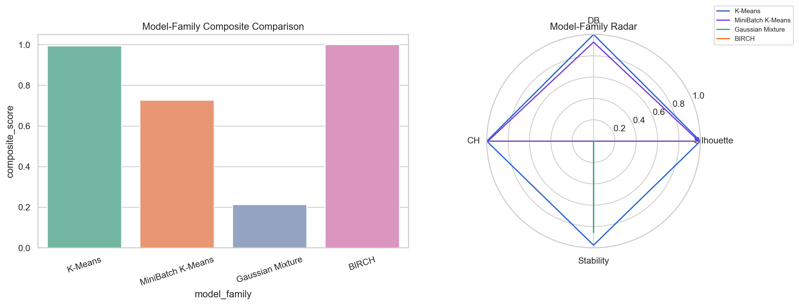
กราฟที่ K สุดท้าย เก็บเป็นหลักฐานประกอบ ไม่ใช้แทน family screening
| model_family | k | sample_size | silhouette | davies_bouldin | calinski_harabasz | resample_ari | smallest_cluster_pct | runtime_seconds | composite_score |
|---|---|---|---|---|---|---|---|---|---|
| K-Means | 5 | 12000 | 0.4276 | 0.8827 | 16,546.0233 | 0.9931 | 13.2250 | 2.2843 | 0.9937 |
| MiniBatch K-Means | 5 | 12000 | 0.4265 | 0.9031 | 16,475.0936 | 0.7243 | 14.2417 | 0.4750 | 0.7260 |
| Gaussian Mixture | 5 | 12000 | 0.3460 | 1.1673 | 9,992.5011 | 0.9596 | 1.6250 | 2.1303 | 0.2133 |
| BIRCH | 5 | 12000 | n.a. | n.a. | n.a. | 1.0000 | n.a. | 0.8223 | 1.0000 |
ดู Inertia, Gap Statistic, Silhouette, DB, CH และ Resample ARI ร่วมกัน
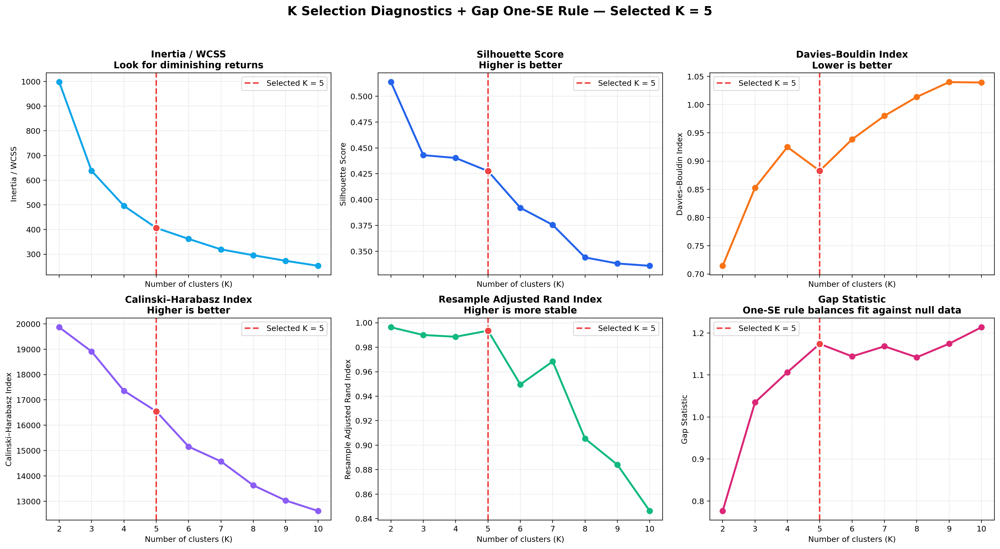
เส้นตั้งคือ K ที่เลือกด้วย Gap one-SE และ guardrails
| k | inertia | gap_statistic | gap_standard_error | silhouette | davies_bouldin | calinski_harabasz | resample_ari_mean | smallest_cluster_pct | eligible_for_selection | selected_k |
|---|---|---|---|---|---|---|---|---|---|---|
| 2 | 997.4182 | 0.7762 | 0.0058 | 0.5136 | 0.7145 | 19,864.7134 | 0.9963 | 45.0583 | True | False |
| 3 | 637.9056 | 1.0349 | 0.0047 | 0.4430 | 0.8527 | 18,909.4799 | 0.9900 | 28.9250 | True | False |
| 4 | 495.9152 | 1.1066 | 0.0045 | 0.4403 | 0.9248 | 17,359.2953 | 0.9886 | 17.0083 | True | False |
| 5 | 406.4066 | 1.1741 | 0.0056 | 0.4275 | 0.8827 | 16,546.0233 | 0.9935 | 13.2250 | True | True |
| 6 | 362.0142 | 1.1444 | 0.0056 | 0.3920 | 0.9385 | 15,155.2294 | 0.9496 | 10.1917 | True | False |
| 7 | 319.5202 | 1.1683 | 0.0029 | 0.3755 | 0.9800 | 14,571.4259 | 0.9684 | 8.2917 | True | False |
| 8 | 295.8057 | 1.1422 | 0.0028 | 0.3440 | 1.0135 | 13,627.5742 | 0.9053 | 7.2083 | True | False |
| 9 | 273.2676 | 1.1746 | 0.0046 | 0.3382 | 1.0398 | 13,029.9352 | 0.8840 | 6.8083 | True | False |
| 10 | 252.9894 | 1.2137 | 0.0045 | 0.3359 | 1.0391 | 12,616.2875 | 0.8463 | 6.4083 | True | False |
ใช้ diagnostics สำหรับ clustering ไม่ใช้ confusion matrix, recall หรือ SHAP ปลอม
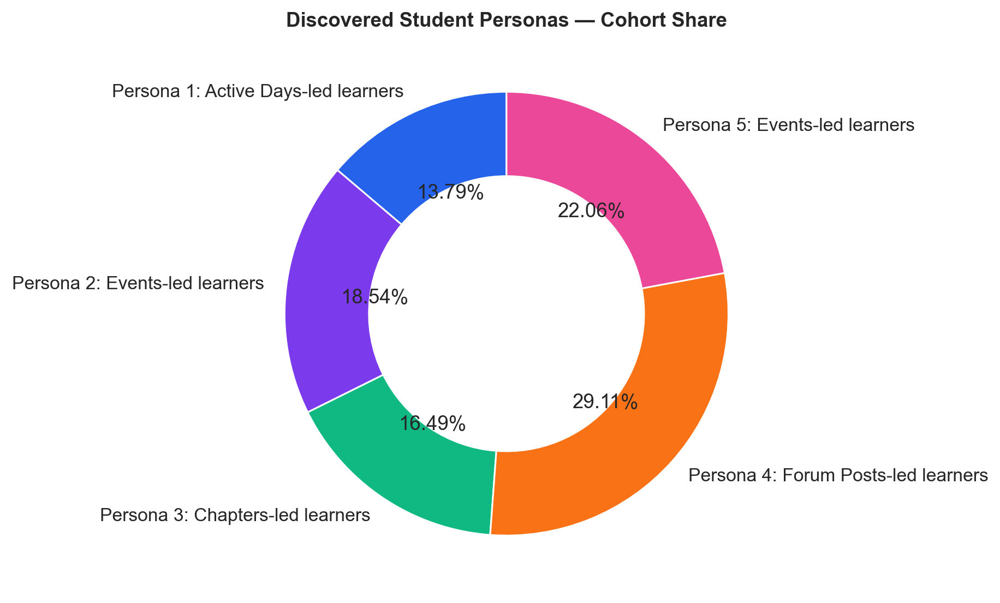
จำนวนและสัดส่วนจริง
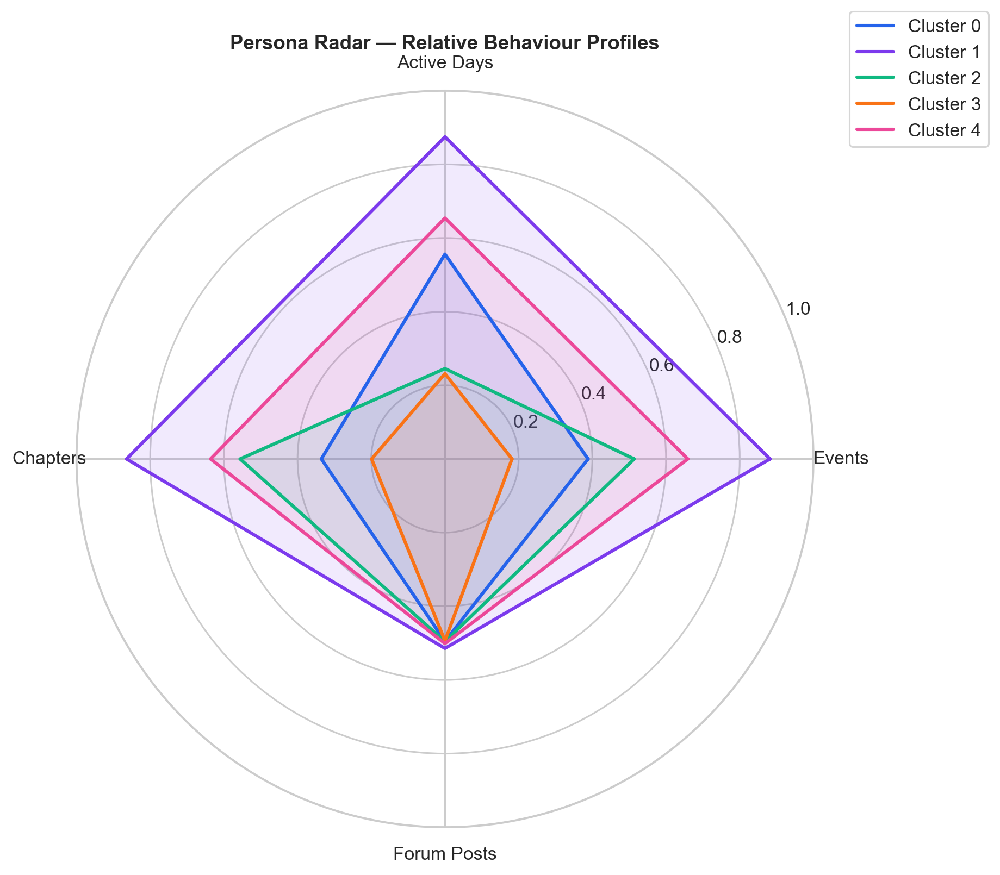
พฤติกรรม 4 ด้าน
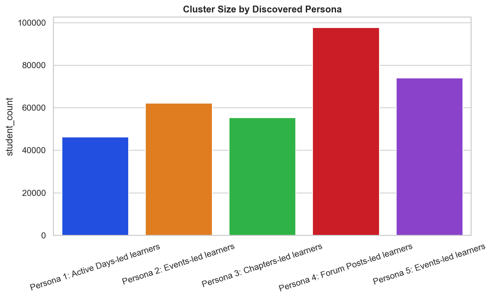
ตรวจ imbalance
| cluster | persona_name | student_count | student_pct | dominant_behavior | lowest_behavior | behavioral_dossier | assignment_file |
|---|---|---|---|---|---|---|---|
| 0 | Persona 1: Active Days-led learners | 46296 | 13.7929 | active days | chapters | Highest relative signal: active days (0.556); lowest: chapters (0.335). | outputs/data/cluster_assignments.csv |
| 1 | Persona 2: Events-led learners | 62225 | 18.5387 | events | forum posts | Highest relative signal: events (0.882); lowest: forum posts (0.514). | outputs/data/cluster_assignments.csv |
| 2 | Persona 3: Chapters-led learners | 55365 | 16.4949 | chapters | active days | Highest relative signal: chapters (0.556); lowest: active days (0.245). | outputs/data/cluster_assignments.csv |
| 3 | Persona 4: Forum Posts-led learners | 97719 | 29.1134 | forum posts | events | Highest relative signal: forum posts (0.494); lowest: events (0.182). | outputs/data/cluster_assignments.csv |
| 4 | Persona 5: Events-led learners | 74045 | 22.0602 | events | forum posts | Highest relative signal: events (0.659); lowest: forum posts (0.501). | outputs/data/cluster_assignments.csv |
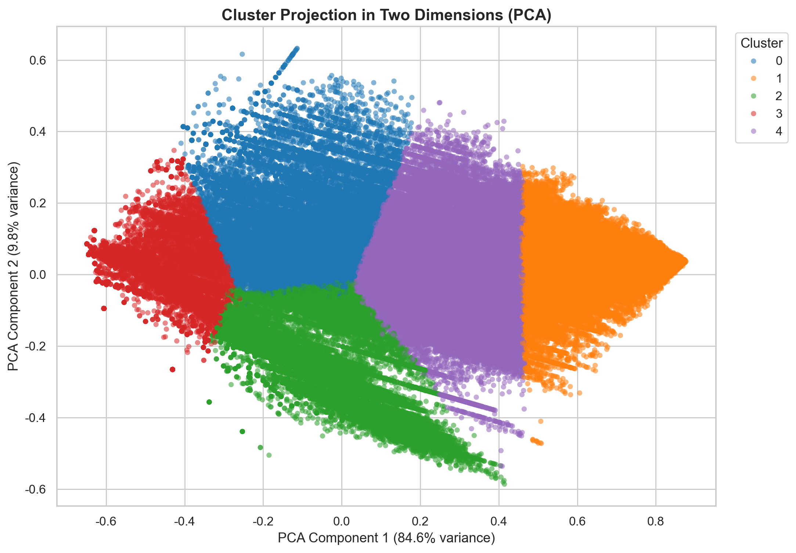
visualisation only
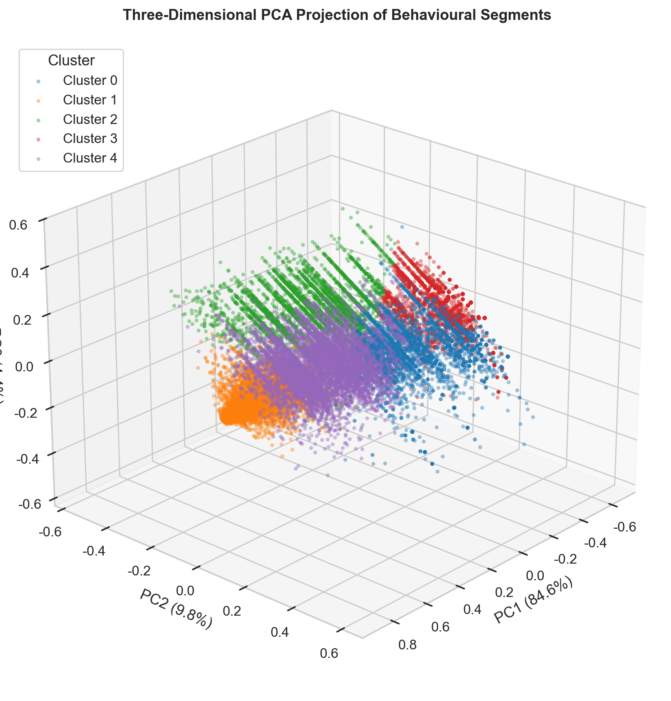
PC1–PC3; visualisation only
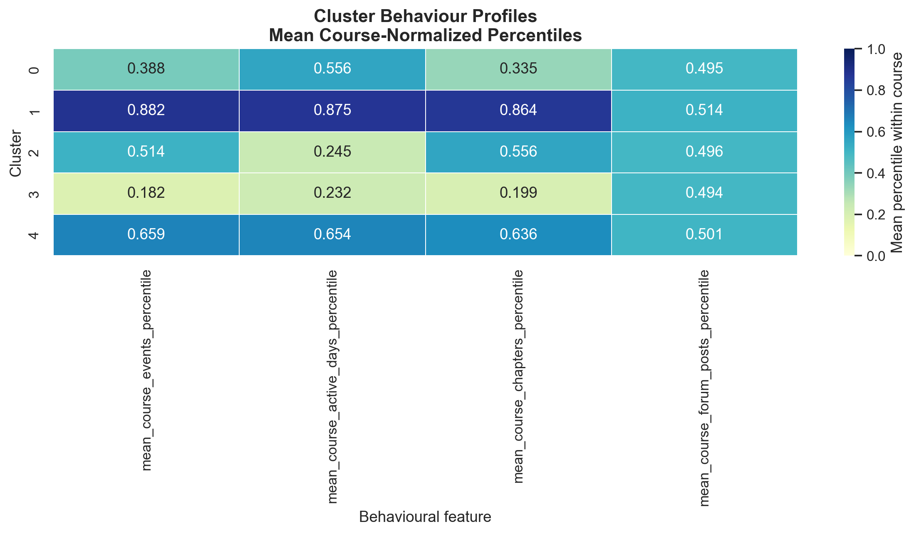
mean percentile by persona
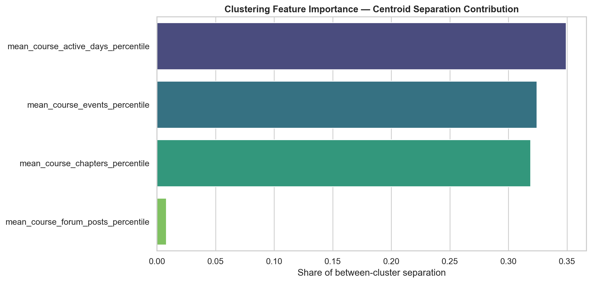
สัดส่วนการแยก centroid
| feature | contribution_pct | between_cluster_variance | total_variance |
|---|---|---|---|
| mean_course_active_days_percentile | 34.9213 | 0.0633 | 0.0698 |
| mean_course_events_percentile | 32.4205 | 0.0639 | 0.0759 |
| mean_course_chapters_percentile | 31.8787 | 0.0593 | 0.0717 |
| mean_course_forum_posts_percentile | 0.7796 | 0.0001 | 0.0027 |
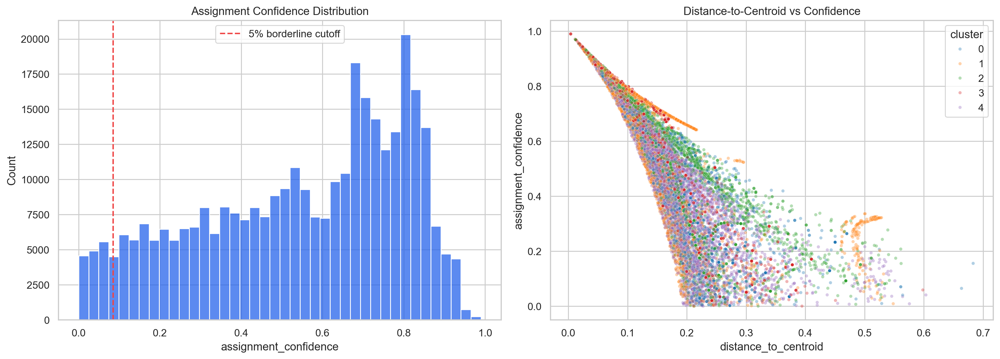
กรณีชายขอบ ไม่ใช่ supervised prediction error
Lowest-confidence preview
| userid_DI | cluster | distance_to_centroid | second_centroid_distance | assignment_confidence | borderline_flag |
|---|---|---|---|---|---|
| MHxPC130350604 | 0 | 0.2850 | 0.2850 | 0.0000 | True |
| MHxPC130341303 | 4 | 0.5354 | 0.5354 | 0.0000 | True |
| MHxPC130533162 | 1 | 0.3536 | 0.3536 | 0.0000 | True |
| MHxPC130042405 | 4 | 0.3540 | 0.3540 | 0.0000 | True |
| MHxPC130396598 | 0 | 0.2278 | 0.2278 | 0.0000 | True |
| MHxPC130453447 | 4 | 0.2182 | 0.2182 | 0.0000 | True |
| MHxPC130550696 | 2 | 0.5859 | 0.5859 | 0.0000 | True |
| MHxPC130022964 | 3 | 0.2191 | 0.2191 | 0.0001 | True |
| MHxPC130444238 | 2 | 0.2110 | 0.2110 | 0.0001 | True |
| MHxPC130435027 | 4 | 0.3260 | 0.3260 | 0.0001 | True |
| MHxPC130328566 | 4 | 0.3100 | 0.3100 | 0.0001 | True |
| MHxPC130137743 | 4 | 0.5236 | 0.5236 | 0.0001 | True |
| MHxPC130543214 | 4 | 0.2491 | 0.2491 | 0.0001 | True |
| MHxPC130481722 | 4 | 0.2906 | 0.2906 | 0.0001 | True |
| MHxPC130492773 | 4 | 0.2315 | 0.2315 | 0.0002 | True |
| MHxPC130044551 | 2 | 0.2377 | 0.2378 | 0.0002 | True |
| MHxPC130121667 | 4 | 0.5090 | 0.5091 | 0.0002 | True |
| MHxPC130425607 | 4 | 0.2946 | 0.2946 | 0.0002 | True |
| MHxPC130052247 | 2 | 0.2123 | 0.2124 | 0.0002 | True |
| MHxPC130178761 | 1 | 0.2914 | 0.2914 | 0.0002 | True |
| MHxPC130484129 | 4 | 0.1995 | 0.1995 | 0.0002 | True |
| MHxPC130176236 | 0 | 0.2130 | 0.2130 | 0.0002 | True |
| MHxPC130167717 | 0 | 0.2258 | 0.2259 | 0.0002 | True |
| MHxPC130141131 | 0 | 0.2258 | 0.2259 | 0.0002 | True |
| MHxPC130438469 | 0 | 0.3473 | 0.3474 | 0.0002 | True |
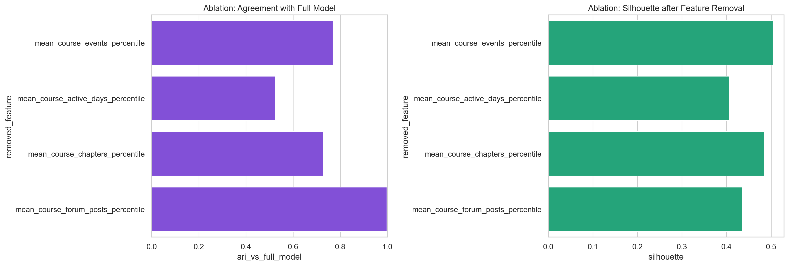
ARI เทียบ full model และ metrics หลังตัดทีละ feature
| removed_feature | remaining_feature_count | ari_vs_full_model | silhouette | davies_bouldin | calinski_harabasz | smallest_cluster_pct | largest_cluster_pct |
|---|---|---|---|---|---|---|---|
| mean_course_events_percentile | 3 | 0.7693 | 0.5039 | 0.7598 | 20,880.9608 | 12.1917 | 31.6583 |
| mean_course_active_days_percentile | 3 | 0.5256 | 0.4067 | 0.9022 | 21,395.1856 | 16.1667 | 27.7500 |
| mean_course_chapters_percentile | 3 | 0.7276 | 0.4845 | 0.7475 | 23,419.4711 | 15.3417 | 27.8917 |
| mean_course_forum_posts_percentile | 3 | 0.9980 | 0.4360 | 0.8646 | 17,856.1496 | 13.1750 | 29.3000 |
Preview 100 of 335,650. เปิดไฟล์ assignment เต็ม
| userid_DI | cluster |
|---|---|
| MHxPC130000002 | 3 |
| MHxPC130000004 | 1 |
| MHxPC130000006 | 0 |
| MHxPC130000007 | 1 |
| MHxPC130000008 | 2 |
| MHxPC130000011 | 4 |
| MHxPC130000014 | 2 |
| MHxPC130000016 | 3 |
| MHxPC130000018 | 1 |
| MHxPC130000021 | 1 |
| MHxPC130000024 | 4 |
| MHxPC130000026 | 4 |
| MHxPC130000027 | 3 |
| MHxPC130000030 | 0 |
| MHxPC130000031 | 1 |
| MHxPC130000032 | 2 |
| MHxPC130000033 | 3 |
| MHxPC130000034 | 2 |
| MHxPC130000035 | 3 |
| MHxPC130000037 | 4 |
| MHxPC130000038 | 2 |
| MHxPC130000045 | 3 |
| MHxPC130000049 | 3 |
| MHxPC130000057 | 3 |
| MHxPC130000058 | 1 |
| MHxPC130000059 | 3 |
| MHxPC130000060 | 2 |
| MHxPC130000062 | 1 |
| MHxPC130000064 | 4 |
| MHxPC130000066 | 4 |
| MHxPC130000068 | 3 |
| MHxPC130000069 | 3 |
| MHxPC130000070 | 3 |
| MHxPC130000071 | 1 |
| MHxPC130000073 | 1 |
| MHxPC130000076 | 2 |
| MHxPC130000078 | 4 |
| MHxPC130000082 | 2 |
| MHxPC130000083 | 0 |
| MHxPC130000084 | 3 |
| MHxPC130000085 | 1 |
| MHxPC130000086 | 3 |
| MHxPC130000088 | 4 |
| MHxPC130000089 | 4 |
| MHxPC130000092 | 2 |
| MHxPC130000093 | 1 |
| MHxPC130000094 | 4 |
| MHxPC130000095 | 1 |
| MHxPC130000098 | 4 |
| MHxPC130000099 | 3 |
| MHxPC130000100 | 1 |
| MHxPC130000101 | 4 |
| MHxPC130000102 | 0 |
| MHxPC130000105 | 3 |
| MHxPC130000106 | 4 |
| MHxPC130000108 | 1 |
| MHxPC130000109 | 0 |
| MHxPC130000114 | 3 |
| MHxPC130000115 | 2 |
| MHxPC130000118 | 0 |
| MHxPC130000119 | 4 |
| MHxPC130000120 | 1 |
| MHxPC130000125 | 3 |
| MHxPC130000128 | 4 |
| MHxPC130000132 | 1 |
| MHxPC130000135 | 4 |
| MHxPC130000136 | 2 |
| MHxPC130000137 | 4 |
| MHxPC130000139 | 1 |
| MHxPC130000141 | 0 |
| MHxPC130000142 | 0 |
| MHxPC130000146 | 3 |
| MHxPC130000148 | 4 |
| MHxPC130000152 | 1 |
| MHxPC130000154 | 0 |
| MHxPC130000156 | 4 |
| MHxPC130000157 | 0 |
| MHxPC130000158 | 3 |
| MHxPC130000162 | 1 |
| MHxPC130000163 | 3 |
| MHxPC130000165 | 2 |
| MHxPC130000166 | 0 |
| MHxPC130000167 | 3 |
| MHxPC130000168 | 1 |
| MHxPC130000171 | 1 |
| MHxPC130000174 | 1 |
| MHxPC130000175 | 3 |
| MHxPC130000176 | 0 |
| MHxPC130000178 | 4 |
| MHxPC130000179 | 2 |
| MHxPC130000184 | 2 |
| MHxPC130000185 | 3 |
| MHxPC130000186 | 0 |
| MHxPC130000188 | 4 |
| MHxPC130000189 | 4 |
| MHxPC130000190 | 1 |
| MHxPC130000192 | 4 |
| MHxPC130000194 | 4 |
| MHxPC130000195 | 4 |
| MHxPC130000197 | 3 |
ล็อก preprocessing/model และตรวจ schema
models/final/clustering_pipeline.joblib
Schema passed: true
Unknown predictions: []
mean_course_events_percentilemean_course_active_days_percentilemean_course_chapters_percentilemean_course_forum_posts_percentileOutcome/profile inputs allowed: false
ใช้ median imputation, percentile scale เดิม และ centroid จากรอบล่าสุดจริง
ถ้าไม่มี current cohort ต้องแสดง not_evaluated ไม่สรุปว่า no drift
not_evaluated
Baseline learners: 335,650
Retraining triggered: false
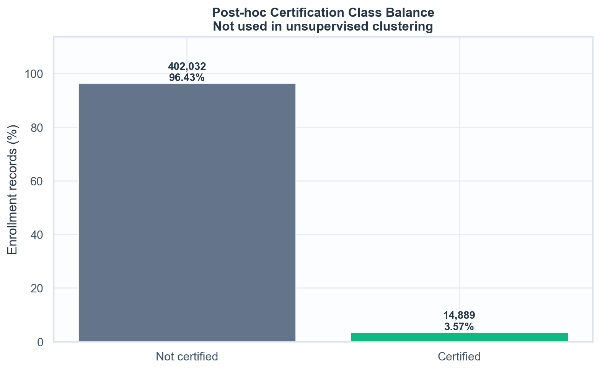
ตรวจ balance หลัง model lock เท่านั้น